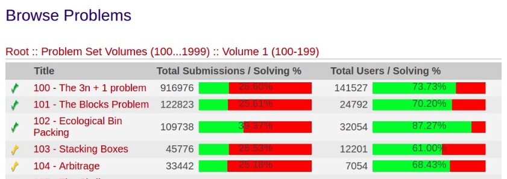
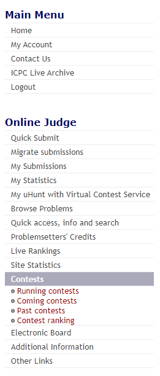
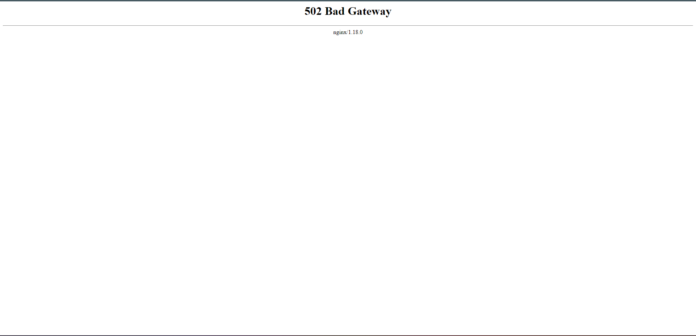

Relato dos Resultados da Análise de Tarefas
Introdução
De acordo com a proposta de Barbosa e Silva (2011), o Relato dos Resultados dos Storyboards possui como principal objetivo documentar os resultados obtidos durante o processo de Avaliação1. Conforme os artefatos: Planejamento de Avaliação da Análise de Tarefas e Planejamento do Relato dos Resultados, estão apresentadas as entrevistas referente as funcionalidades definidades anteriormente por cada integrante. Tais entrevistas fazem referência a Análise de Tarefas, seguindo os parâmetros impostos pelos artefatos citados anteriormente.
Entrevistas
1. Procurar um problema (Browse Problems) - Suzane
1.1 Objetivos e escopo da avaliação
Essa avaliação objetivava verificar se a tarefa de "Procurar um problema" está alinhada com o fluxo de atividades dos usuários do site do Online Juiz. Dessa forma, sendo possível identificar através da usabilidade do usuário com a interface quais devem ser as alterações de melhoria necessárias.
1.2 Método de avaliação empregado
Para realizar essa avaliação, foi necessário empregar o método de entrevistas contendo vinte e uma perguntas conforme proposto anteriormente no planejamento. No entanto, é importante ressaltar que a quantidade de perguntas pode variar de acordo com as respostas do entrevistados.
Diante do planejamento apresentado e o resultado final, foi possível produzir o seguinte cronograma:
Tabela 1 - Cronograma da Avaliação do Storyboard - Procurar um problema
| Entrevistador(es) | Entrevistado(s) | Horário de Início | Horário de Fim | Data | Local |
|---|---|---|---|---|---|
| Suzane Duarte | Letícia | 14:30 | 13:40 | 07/11/2023 | Presencial com gravação no Microsoft Teams |
Fonte - Suzane Duarte.
1.3 Seleção dos participantes
O perfil do participante se enquadra no perfil de usuário, pois se trata de uma jovem estudante de tecnologia que já teve contato com outras plataformas de juíz online, além de também possuir experiência com a área de tecnologia.
1.4 Problemas e Dificuldades encontradas
Foi possível analisar que o usuário teve algumas dificildades. A mesma não possuia fluência em inglês, dessa forma, mesmo com a tradução automática disponibilizada pelo Google Translate sua primeira dificuldade foi encontrar a aba de "Browse Problems".
A seguir, os problemas relatado pelo usuário estavam atrelados com o design das páginas correlatas a funcionalidade de Procurar um problema. Por exemplo, ao navegar pelos problemas, os ícones de "Pasta" e de "Volume" são os mesmos, de forma que o usuário nem sequer percebeu que tratavam-se de coisas distintas.
Além disso, o usuário também não conseguiu compreender qual a diferença entre o ícone de check amarelo e o ícone de check verde contidos à esquerda do nome de cada um dos problemas. Além de também ter encontrado dificuldade para entender as várias informações contidas à direita desse mesmo nome conforme pode ser visualizado na Figura 1.

Fonte: Suzane Duarte
1.5 Sugestões de Melhoria
O usuário trouxe como sugestão de melhoria alterações de design na tabela da Figura 1, como por exemplo, alterar os ícones de "Checks" para outro ícone que exemplifique melhor sobre o que se trata aquela informação. Nessa mesma região, ela também sugeriu que melhorassem a forma como as informações de cada um dos problemas está descrito e representado na tabela.
1.6 Feedbacks dos Usuários
Em suma, o participante conseguiu realizar a tarefa proposta sem evidenciar grandes problemas, porém, apresentando apenas algumas sugestões de melhorias extremamente pertinentes.
1.7 Análise e Interpretação dos Usuários
A partir da entrevista realizada, o entrevistador conseguiu realizar uma análise e definir que apesar da dificuldade encontrada pela participante em identificar determinados ícones, o fluxo da tarefa "Procurar um problema" está de acordo com o site avaliado. Dessa forma, a sequência pode ser mantida, mas devem-se realizar alterações para que o usuário não apenas clique nos botões e hiperlinks de forma aleatória.
1.8 Sumário dos Principais Resultados
Em seguida estarão dispostas as respostas obtidas durante a entrevista na tabela 3.
Tabela 2 - Respostas da entrevista com Letícia Resende
| Número da pergunta | Respostas do Usuário |
|---|---|
| 1 | Letícia Resende |
| 2 | 23 |
| 3 | Ensino Superior |
| 4 | Tenho vasta experiência |
| 5 | Nenhuma, nunca utilizou |
| 6 | Não |
| 7 | MOJ, nenhum motivo aparente. Foi solicitação da faculdade |
| 11 | O entrevistado foi até a área Browse Problems, porém ele afirmou ser estranho a disposição de pastas dentro de mais pastas o que tornou a tarefa trabalhosa sem necessidade |
| 15 | Não |
| 16 | O entrevistado não saiu do fluxo |
| 17 | Não no fluxo |
| 18 | Não |
| 19 | O entrevistado não se sentiu incomodado |
| 20 | Regular |
| 21 | O entrevistado sugeriu que o site deveria seguir mais o padrão de disposição de icones como em outros sites |
Fonte: Suzane Duarte.
Dessa forma, a partir das respostas apresentadas é possível concluir que o HTA está de acordo com o obejtivo definido e que a participante sugeriu melhorias no design do site.
Link da gravação da entrevista
2. Submeter problema (Quick Submit) - Pablo G
2.1 Objetivos e escopo da avaliação
Avaliar a análise de tarefas proposta, a fim de observer se existem falhas e ou alternativas, além de obter sugestões sobre a análise de tarefas.
2.2 Método de avaliação empregado
Assim, como o proposto no Planejamento da Avaliação das tarefas, o método utilizado foi o de entrevista, visto que permite a coleta de dados a partir da percepção de um usuário real. Os dados da entrevista estão representados na tabela 3.
Tabela 3 - Cronograma da avaliação de tarefas com usuário Julian Michel.
| Entrevistador | Entrevistado(s) | Horário de Início | Horário de Fim | Data | Local |
|---|---|---|---|---|---|
| Pablo Guilherme | Julian Michel | 16:55 | 17:20 | 08/11/2023 | Discord |
Fonte: Pablo Guilherme
2.3 Seleção dos participantes
O participante selecionado se encaixa com o perfil de usuário definido no projeto. Ele é estudante do curso Ciência da computação com experiência média em tecnologia e é tecnófilo. Além disso, ele está entre a faixa de idade definida pelo perfil de usuário (19 a 24 anos).
2.4 Problemas e Dificuldades encontradas
O entrevistado não apresentou nenhuma dificuldado no decorrer da entrevista ao prosseguir pelos caminhos das tarefas.
2.5 Sugestões de Melhoria
O entrevistado apenas sugeriu uma melhoria no HTA de contact us, a qual seria adicionar uma etapa de escrever o titulo do contato
2.6 Feedbacks dos Usuários
O entrevistado informou que os fluxos de análise de tarefas HTA estavam corretos, salvo uma sugestão de adicionar o campo de Título no fluxo do contact us.
2.7 Análise e Interpretação dos Usuários
A partir do que o entrevistado comentou é possivel concluir que o site possui em sua grande maioria problemas com a interface, mas suas funcionalidades funcionam de maneira correta mesmo que possuam uma disposição estranha dentro do site
2.8 Sumário dos Principais Resultados
Em seguida estarão dispostas as respostas obtidas durante a entrevista na tabela 3.
Tabela 3 - Respostas da entrevista com Julian
| Número da pergunta | Respostas do Usuário |
|---|---|
| 1 | Julian Michel Gonçalves Schamne |
| 2 | 22 |
| 3 | Ensino Superior |
| 4 | Trabalha como analista de dados tem conhecimento em python, power bi, excel |
| 5 | Nenhuma, nunca utilizou |
| 6 | Não |
| 7 | Nunca utilizou nenhum |
| 14 | O entrevistado apenas seguiu ate a área de quick submit e verificou que esta tarefa estava correta no site |
| 15 | O entrevistado não saiu do fluxo proposto na análise de tarefas |
| 16 | O entrevistado não saiu do fluxo |
| 17 | O entrevistado recomendou que o fluxo do contact us também possuisse a parte de titulo do contact |
| 18 | Não |
| 19 | O entrevistado apenas se sentiu incomodado com o design do site |
| 20 | Ruim |
| 21 | O entrevistado sugeriu que o site deveria seguir mais o padrão de disposição de icones como em outros sites |
Fonte: Pablo Guilherme.
Link da gravação da entrevista
3. Contatar Colaboradores - Eric C
3.1 Objetivos e escopo da avaliação
Realizar uma avaliação da análise de tarefas proposta, com o objetivo de identificar possíveis falhas, alternativas e coletar sugestões para aprimorar a análise de tarefas.
3.2 Método de avaliação empregado
Conforme planejado na Avaliação das Tarefas, o método escolhido foi a entrevista, uma vez que possibilita a coleta de dados com base na percepção de um usuário real. Os resultados da entrevista estão registrados na Tabela 3.
Tabela 3 - Cronograma da avaliação de tarefas com usuário Luisa Nogueira.
| Entrevistador | Entrevistado(s) | Horário de Início | Horário de Fim | Data | Local |
|---|---|---|---|---|---|
| Eric Camargo | Luisa Nogueira | 18:00 | 18:10 | 08/11/2023 | Microsoft Teams |
Fonte: Eric Camargo
3.3 Seleção dos participantes
O participante escolhido está alinhado com o perfil de usuário estabelecido no projeto, pois é um estudante do curso de Ciência da Computação com uma média de experiência em tecnologia. Além disso, ele se enquadra na faixa etária definida pelo perfil de usuário, situando-se entre os 19 e 24 anos. Além disso, demonstra um forte interesse por tecnologia.
3.4 Problemas e Dificuldades encontradas
O entrevistado não apresentou nenhuma dificuldado no decorrer da entrevista ao prosseguir pelos caminhos das tarefas.
3.5 Sugestões de Melhoria
Não apresentou sugestões
3.6 Feedbacks dos Usuários
O entrevistado informou que os fluxos de análise de tarefas HTA estavam corretos
3.7 Análise e Interpretação dos Usuários
Com base nos comentários do entrevistado, é viável concluir que o site apresenta, em sua maioria, desafios relacionados à interface, embora suas funcionalidades funcionem de maneira adequada, apesar de uma disposição incomum dentro do site.
3.8 Sumário dos Principais Resultados
Em seguida estarão dispostas as respostas obtidas durante a entrevista na tabela 4.
Tabela 4 - Respostas da entrevista com Luisa
| Número da pergunta | Respostas do Usuário |
|---|---|
| 1 | Luisa Nogueira |
| 2 | 20 |
| 3 | Ensino Superior |
| 4 | Utiliza o tempo todo na faculdade |
| 5 | Nenhuma, nunca utilizou |
| 6 | Não |
| 7 | Nunca utilizou nenhum |
| 8 | O entrevistado seguiu para a paginá de contact us,e mostrou como utilizaria |
| 15 | O entrevistado não saiu do fluxo proposto na análise de tarefas |
| 16 | O entrevistado não saiu do fluxo |
| 17 | O entrevistado não sugeriu mudanças |
| 18 | Não |
| 19 | Não |
| 20 | Regular |
| 21 | O entrevistado não sugeriu nada |
Fonte: Eric Camargo.
Link da gravação da entrevista
4. Editar Conta - Luana T
4.1 Objetivos e escopo da avaliação
Avaliar a análise da tarefa "Editar Conta", a fim de observer se existem falhas e/ou alternativas, além de obter sugestões sobre a análise de tarefas.
4.2 Método de avaliação empregado
De acordo com Planejamento da Avaliação da Análise de Tarefas, o método utilizado foi o de entrevista, visto que permite a coleta de dados a partir da percepção de um usuário real. Os Dados da entrevista estão apresentados na tabela 7.
Tabela 7 - Cronograma da avaliação - Acessar Contest System.
| Entrevistador | Entrevistado(s) | Horário de Início | Horário de Fim | Data | Local |
|---|---|---|---|---|---|
| Luana Torres | Letícia Torres | 13:40 | 13:55 | 08/11/2023 | Microsoft Teams |
Fonte: Luana Torres.
4.3 Seleção dos participantes
O participante selecionado se encaixa com o perfil de usuário definido ao longo do projeto. Ela é estudante do curso Engenharia de Software com experiência média a alta em tecnologia e é tecnófila. Além disso, está dentro da faixa etária definida pelo perfil de usuário (19 a 24 anos).
4.4 Problemas e Dificuldades encontradas
Nenhum problema ou dificuldade foi relatado durante a entrevista.
4.5 Sugestões de Melhoria
Na tabela 8 é possivel verificar as respostas obtidas durante a entrevista:
Tabela 8 - Respostas da entrevista com Letícia Torres
| Número da pergunta | Respostas do Usuário |
|---|---|
| 1 | Leticia Torres |
| 2 | 21 |
| 3 | Ensino Superior |
| 4 | Tem experiência na área de tecnologia, cursa bacharelado na área. |
| 5 | Uso ou já usei para fins acadêmicos |
| 6 | Não |
| 7 | Já utilizei o CD-MOJ, único utilizado. |
| 10 | O entrevistado foi até a área de my account e clicou no botão de editar as informações, clicou em Contact Info, fez alteração e clicou em Update |
| 15 | O entrevistado não saiu do fluxo proposto na análise de tarefas |
| 16 | O entrevistado não saiu do fluxo |
| 17 | Não |
| 18 | Não |
| 19 | O entrevistado apenas se sentiu incomodado com o design do site |
| 20 | Ruim |
| 21 | O entrevistado sugeriu que o site deveria ter uma melhor navegabilidade, ícones maiores, uma melhor acessibilidade e cores diferentes. Sugeriu também mudança na fonte do site. |
Fonte: Luana Torres .
Link da gravação da entrevista
4.6 Feedbacks dos Usuários
O usuário relatou uma navegabilidade ruim na interface, com quase nenhuma acessibilidade e design não agradável.
4.7 Análise e Interpretação dos Usuários
A partir do que o entrevistado comentou é possivel concluir que o site possui em sua grande maioria problemas com a interface, como um design desagradável, mas suas funcionalidades funcionam de maneira correta.
4.8 Sumário dos Principais Resultados
O usuário não apresentou dificuldade para realizar a tarefa, mas sim com a interface no geral e a complexidade da tarefa sem necessidade. Destacou a importância de uma boa navegabilidade e acessibilidade.
5. Acessar o Contest System - Ester L
5.1 Objetivos e escopo da avaliação
O objetivo da avaliação do HTA "Acessar o Contest System" é verificar se ele está alinhado com o fluxo de ações que o usuário realiza para executar a tarefa no site Online Judge. Além disso, essa avaliação ajuda na identificação de possíveis melhorias no diagrama referente à tarefa "Acessar o Contest System".
5.2 Método de avaliação empregado
Assim, como o proposto no Planejamento da Avaliação da Análise de Tarefas, o métodos utilizado foi o de entrevista, visto que permite a coleta de dados a partir da percepção de um usuário real. Os dados da entrevista estão representados na tabela 8.
Tabela 8 - Cronograma da avaliação - Acessar Contest System.
| Entrevistador | Entrevistado(s) | Horário de Início | Horário de Fim | Data | Local |
|---|---|---|---|---|---|
| Ester Lino | Jennifer Costa | 15:50 | 16:00 | 07/11/2023 | Faculdade do Gama (gravação pelo Microsoft Teams) |
Fonte: Ester Lino.
5.3 Seleção dos participantes
A participante selecionada se encaixa com o perfil de usuário definido no projeto. Ela é estudante do curso Engenharia de Software com experiência média em tecnologia e é tecnófila. Além disso, ela está entre a faixa de idade definida pelo perfil de usuário (19 a 24 anos).
5.4 Problemas e Dificuldades encontradas
Durante a entrevista, é possível perceber que a participante teve dificuldade de encontrar o ranking da área "Contests" (Figura 2). Nota-se que ela se confunde com o link "Live Rankings" que deveria exibir o ranking ao vivo dos usuários, mas que redireciona para um página inexistente. Apesar da confusão, a participante conseguiu se recuperar do erro e executar a tarefa solicitada.

Fonte: Ester Lino

Fonte: Ester Lino
5.5 Sugestões de Melhoria
Não houve nenhuma sugestão de melhoria.
5.6 Feedbacks dos Usuários
Para a participante o design do site precisa de melhorias, visto que o design atual é um pouco inadequado e dificulta a navegabilidade.
5.7 Análise e Interpretação dos Usuários
Considerando a entrevista realizada, é possível concluir que, apesar da dificuldade encontrada pela participante, o fluxo da tarefa "Acessar o Contest System" está de acordo com o site avaliado.
5.8 Sumário dos Principais Resultados
Em seguida estarão dispostas as respostas obtidas durante a entrevista na tabela 3.
Tabela 2 - Respostas da entrevista com Letícia Resende
| Número da pergunta | Respostas do Usuário |
|---|---|
| 1 | Jennifer |
| 2 | 20 |
| 3 | Ensino Superior |
| 4 | Conhecimento Básico |
| 5 | Já utilizou para fins pessoais |
| 6 | Não |
| 7 | Utilizou o Beecrowd e não gostou. |
| 12 | A entrevistada conseguiu acessar a aba "Contests" sem dificuldade. Porém, quando solicitado que fosse acessado o ranking do Contest System, a entrevistada se confundiu com um link que estava mais acima no menu lateral |
| 15 | Ela afirmou que sim, visto que quando tentou acessar o ranking, acabou ocorrendo uma confusão com os links. |
| 16 | A entrevistada saiu do fluxo ao tentar acessar o Conteste Ranking, mas ela conseguiu se recuperar do erro. |
| 17 | Não sugeriu nenhuma alteração. |
| 18 | Não |
| 20 | Regular |
| 21 | Para a entrevistada, o atual design do site é "bagunçado" e portanto, sugeriu melhorias na aparência do site avaliado. |
Fonte: Ester Lino.
A partir da entrevista, é possível concluir que o HTA está de acordo com o obejtivo definido para ele e que a participante sugeriu melhorias no design do site.
Link da gravação da entrevista
6. Acessar o "Forgot Login?" - Recuperação de login - Kallyne
6.1 Objetivos e escopo da avaliação
A avaliação da tarefa de Recuperação de Login objetiva, seguindo a especificação dada no Planejamento da Avaliação, avaliar a conformidade do fluxo de ações que o usuário realiza para concluir a tarefa com seu respectivo diagrama de Análise Hierárquica de Tarefas no Online Judge, de forma a também mapear problemas não identificados anteriormente e sugestões de design alternativo que resolva insatisfações com a usabilidade.
6.2 Método de avaliação empregado
O método de avaliação definido foi o da entrevista, que adiciona as perspectivas de um usuário real do sistema ao panorama. Na tabela 10, é apresentado o cronograma da entrevista.
Tabela 10 - Cronograma da avaliação - Acessar o "Forgot Login?" - Recuperação de login.
| Entrevistador | Entrevistado(s) | Horário de Início | Horário de Fim | Data | Local |
|---|---|---|---|---|---|
| Kallyne Macedo | Leonardo Aguiar | 16:20 | 16:30 | 03/11/2023 | Gama, DF |
Fonte: Kallyne Macedo.
6.3 Seleção dos participantes
O participante em questão foi selecionado por sua adequação ao perfil de usuário, pois se encontra na faixa dos 19 a 24 anos de idade e foi mapeado grau alto de afinidade com tecnologia, perfil universitário e uso de ferramentas de júri online para fins acadêmicos.
6.4 Problemas e Dificuldades encontradas
O participante não obteve dificuldades para a realização da tarefa.
6.5 Sugestões de Melhoria
O participante entrevistado sugeriu alterações no botão de envio do formulário de recuperação de senha por ter notado o botão "apagado", de forma a não exibir resposta ao clique do usuário.
6.6 Feedbacks dos Usuários
O participante ressaltou que o campo de login está localizado do lado esquerdo da tela, o que foge aos padrões de usabilidade seguidos pela maioria dos sites e causa estranhamento. Apesar disso, conseguiu achar o campo com facilidade.
6.7 Análise e Interpretação dos Usuários
Após verificação do fluxo proposto, o usuário constatou ter feito o mesmo fluxo que se encontra na Análise Hierárquica da Tarefa e mostrou estar de acordo com o que consta no diagrama.
6.8 Sumário dos Principais Resultados
O usuário não apresentou dificuldade para realizar a tarefa, mas notou uma dissonância entre a localização do campo de login do OnlineJudge e de outros sites de uso comum na Internet. Destacou a importância de campos e botões reativos ao uso, que passam segurança ao usuário quanto a realização efetiva de sua tarefa. No mais, seguiu o fluxo de ações existente no diagrama HTA, sem fuga ou alteração do caminho mapeado.
Link da gravação da entrevista
7. Busca por uma página específica - Henrique T
7.1 Objetivos e escopo da avaliação
O objetivo principal é revisar a análise de tarefas proposta, a fim de identificar eventuais deficiências e possíveis alternativas, além de receber sugestões a respeito da análise de tarefas.
7.2 Método de avaliação empregado
Assim, como o proposto no Planejamento da Avaliação das tarefas, o método utilizado foi o de entrevista, visto que permite a coleta de dados a partir da percepção de um usuário real. Os dados da entrevista estão representados na tabela 2.
Tabela 11 - Cronograma da avaliação de tarefas com usuário Josué Texeira.
| Entrevistador | Entrevistado(s) | Horário de Início | Horário de Fim | Data | Local |
|---|---|---|---|---|---|
| Henrique Torres | Josué Texeira | 15:30 | 15:45 | 08/11/2023 | Microsoft Teams |
Fonte: Henrique Torres
7.3 Seleção dos participantes
O participante em questão foi escolhido devido à sua compatibilidade com o perfil de usuário e por possuir um perfil universitário e por usar as ferramentas de júri online para fins acadêmicos e de estudo.
7.4 Problemas e Dificuldades encontradas
O participante não enfrentou desafios com a execução das tarefas.
7.5 Sugestões de Melhoria
O participante sugeriu melhorias na interface, disse que a tela principal do site não é clara e que não reflete muito o objetivo principal do site.
7.6 Feedbacks dos Usuários
A participante acredita que o design do site necessita de aprimoramentos, uma vez que o design atual é considerado inadequado e prejudica a facilidade de navegação.
7.7 Análise e Interpretação dos Usuários
Depois de analisar o fluxo proposto, o usuário percebeu que seguiu o mesmo fluxo descrito na Análise Hierárquica da Tarefa e concordou com o que estava representado no diagrama.
7.8 Sumário dos Principais Resultados
O usuário executou a tarefa sem enfrentar obstáculos, no entanto, observou uma discrepância na localização do campo de login em comparação a outros sites comumente utilizados na Internet. Ele enfatizou a importância de campos e botões que reajam prontamente ao uso, proporcionando segurança ao usuário em relação à conclusão eficaz de suas ações. Além disso, o usuário seguiu fielmente o fluxo de ações delineado no diagrama HTA, sem desvios ou alterações no percurso previamente estabelecido.
Link da gravação da entrevista
Planejamento de reprojeto
Considerando que as entrevistas realizadas resultaram em um levantamento de aspectos de melhoria, será necessário realizar um reprojeto com as mudanças sugeridas. Tal reprojeto deve ser realizado um dia após a entrevista com o usuário e deve manter a estrutura do projeto original, realizando somente as mudanças necessárias. A seguir, na tabela 2, é proposto um cronograma para o reprojeto.
Tabela 1 - Cronograma atualizado do Reprojeto.
| Entrevistador | Horário de Início | Horário de Fim | Data |
|---|---|---|---|
| Eric Camargo | 19:30 | 19:45 | 09/11/2023 |
| Ester Lino | 19:30 | 19:45 | 09/11/2023 |
| Henrique Torres | 19:30 | 19:45 | 09/11/2023 |
| Kallyne Macedo | 19:30 | 19:45 | 09/11/2023 |
| Luana Torres | 19:30 | 19:45 | 09/11/2023 |
| Pablo Guilherme | 19:30 | 19:45 | 09/11/2023 |
| Suzane Duarte | 19:30 | 19:45 | 09/11/2023 |
Fonte: Luana Torres.
Referências bibliográficas
1. BARBOSA, S. D. J.; SILVA, B. S. Interação Humano-Computador. Rio de Janeiro: Elsevier, 2011.
Histórico de versão
| Versão | Data | Descrição | Responsáveis | Revisor |
|---|---|---|---|---|
| 1.0 | 08/11/2023 | Criação da página de Relato dos Resultados da Análise de Tarefas | Luana Torres | Eric Camargo |
| 1.2 | 08/11/2023 | Adição da entrevista 2 | Pablo Guilherme | Eric Camargo |
| 1.3 | 08/11/2023 | Inclusão da avaliação "Acessar Contest System" | Ester Lino | Suzane Duarte |
| 1.4 | 08/11/2023 | Inclusão da avaliação "Forgot login" | Kallyne Macedo | Suzane Duarte |
| 1.5 | 08/11/2023 | Inclusão da avaliação "Browse Problems" | Suzane Duarte | Pablo Guilherme |
| 1.6 | 08/11/2023 | Inclusão da avaliação "Editar Conta" | Luana Torres | Ester Lino |
| 1.7 | 08/11/2023 | Correções na avaliação "Acessar Contest System" | Ester Lino | Luana Torres |